ERITEMA MIGRATÓRIO NECROLÍTICO
O eritema migratório necrolítico é uma condição rara da pele que consiste em áreas de eritema migrantes com bolhas que cicatrizam com hiperpigmentação e com necrólise (morte celular) das camadas superficiais da pele. Foi descrito pela primeira vez por Becker em 1942.
Está classicamente associado a um tumor neuroendócrino pancreático de células alfa das ilhotas do pâncreas produtor de glucagon, mas também pode ocorrer em outras condições. Quando associado à intolerância à glicose, anemia, hiperglucagonemia e perda de peso definem a síndrome do glucagonoma, que é um tumor de baixa incidência - 1 caso para cada 20 milhões de pessoas por ano. O eritema migratório necrolítico ocorre em até 70% dos pacientes com glucagonoma.
Causas e Fisiopatologia
• Glucagonoma: Tumor pancreático que secreta glucagon em excesso, levando à degradação de proteínas e gorduras, com deficiência de aminoácidos, zinco e ácidos graxos.
Outras Causas: Doença hepática crônica, síndrome de má absorção intestinal, pancreatite crônica, infecção, cirrose hepática, tumor extrapancreático secretor de glucagon (renal, duodenal ou pulmonar) ou deficiências nutricionais graves.
Principais Características:
1. Lesões Cutâneas:
o Iniciam como manchas vermelhas que evoluem para placas com bolhas que podem ser vistas no centro das lesões que, posteriormente, dessecam e tornam-se crostas e levam a erosões. Geralmente se apresenta como uma erupção anular irregular com uma borda de avanço serpiginosa.
o Migram para outras áreas, cicatrizando com hiperpigmentação (manchas escuras).
o Localização comum: região genital, virilha, nádegas, abdômen inferior comumente no períneo, extremidades distais e ao redor da boca.
2. Sintomas Sistêmicos (associados ao glucagonoma):
o Perda de peso, diabetes, diarreia, anemia e estomatite (inflamação na boca).
o Em casos não tumorais: desnutrição, cirrose hepática ou deficiências nutricionais.
Diagnóstico
• Exame Clínico: Aspecto característico das lesões e história clínica.
• Biópsia da Pele: Revela necrólise da camada superior da epiderme.
• Investigação Sistêmica:
o Dosagem de glucagon sérico (elevado no glucagonoma).
o Imagens (tomografia ou ressonância abdominal) para detectar tumor pancreático.
o Avaliação de função hepática e estado nutricional.
Tratamento
1. Tratamento da Causa Base:
o Cirurgia para ressecção do glucagonoma (curativa na maioria dos casos).
o Suplementação nutricional (aminoácidos, zinco, ácidos graxos) em deficiências.
2. Controle dos Sintomas Cutâneos:
o Corticoides tópicos ou orais.
o Octreotida (análogo da somatostatina) para reduzir secreção de glucagon.
o Hidratação da pele e cuidados com feridas.
Prognóstico
• Depende da causa subjacente. Em casos de glucagonoma maligno, a sobrevida varia conforme estágio do tumor.
• Lesões cutâneas geralmente melhoram com controle do tumor ou correção das deficiências nutricionais.
Diagnóstico Diferencial
• Psoríase, dermatite atópica, infecções fúngicas e outras dermatoses bolhosas.
• A biópsia e a avaliação sistêmica são essenciais para confirmação.
Se houver suspeita, encaminhamento a dermatologista e endocrinologista é recomendado para abordagem multidisciplinar.
REFERÊNCIAS BIBLIOGRÁFICAS
1. Dulcich G, Mestas Nuñez MA, Gentile EMJ. Migratory necrolytic erythema as a manifestation of pancreatic neuroendocrine tumor. Clinical-radiological evaluation]. Rev Fac Cien ed Univ Nac Cordoba. 2022 Jun 6;79(2):188-192.
2. Moreno-Suárez F, Pulpillo-Ruiz Á, Fontillón Alberdi M. Necrolytic migratory erythema: A diagnostic clue in glucagonoma syndrome. Med Clin (Barc). 2017 Apr 21;148(8):e45.
3. Mendoza-Guil F, Hernández-Jurado I, Burkhardt P, Linares J, Naranjo R. Necrolytic migratory erythema associated with glucagonoma. Actas Dermosifiliogr. 2005 Apr;96(3):175-8
4. Blázquez Encinar JC, Jimeno Sainz A, Orti Tarazona C, de Teresa Parreño L. Necrolytic migratory erythema as initial manifestation of normoglycemic glucagonoma. Med Clin (Barc). 2001 Jun 30;117(4):158-9.
5. de Cristancho NP, Rivera J, de Arriaga AD. Necrolytic migratory erythema. A marker of systemic disease. Rev Clin Esp. 1994 Aug;194(8):654.
Atlas de imagens 15

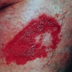


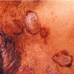


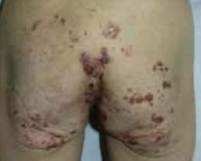

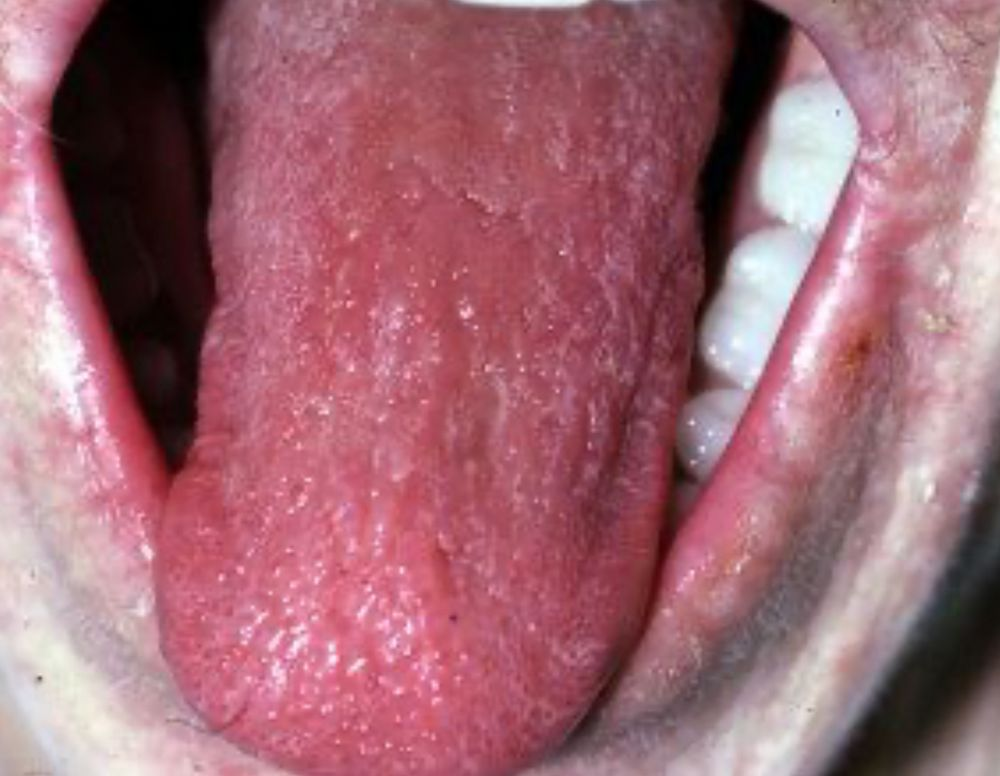

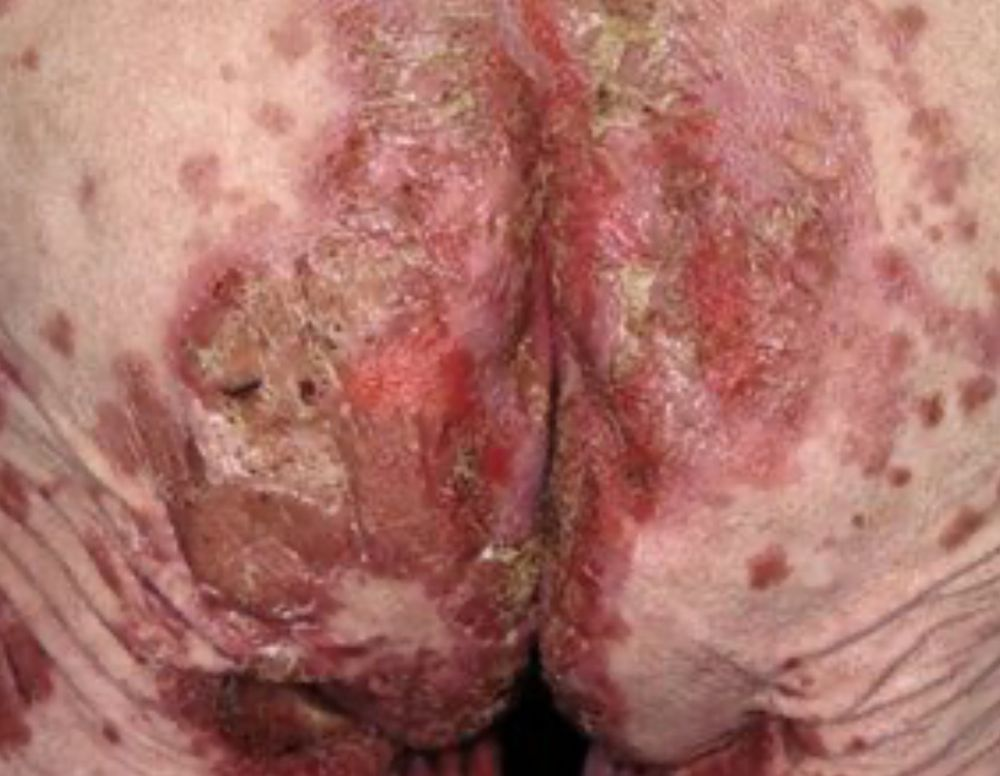

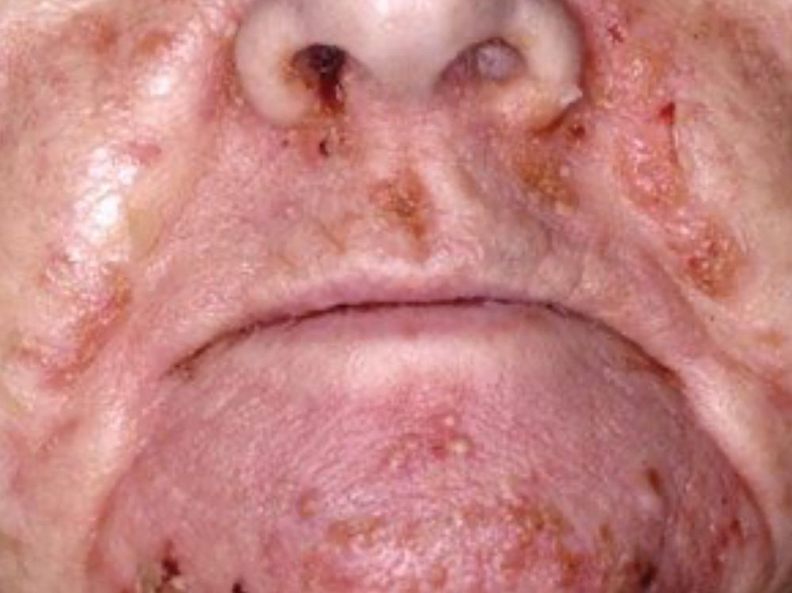

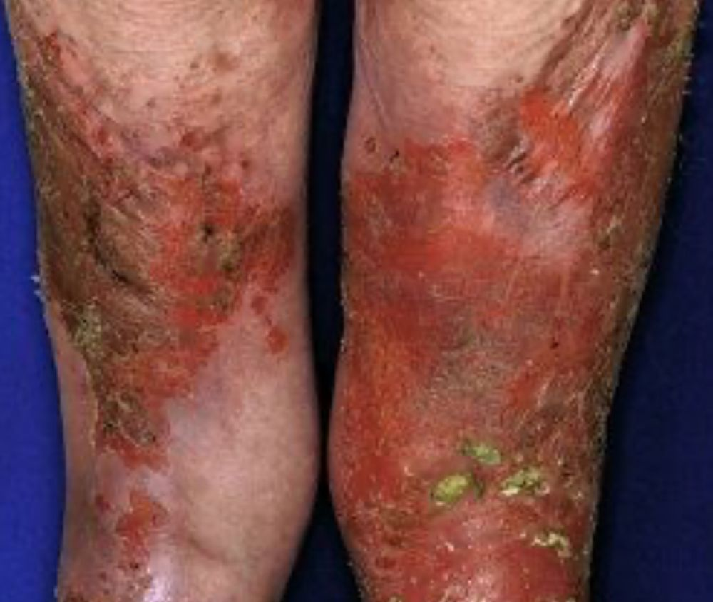

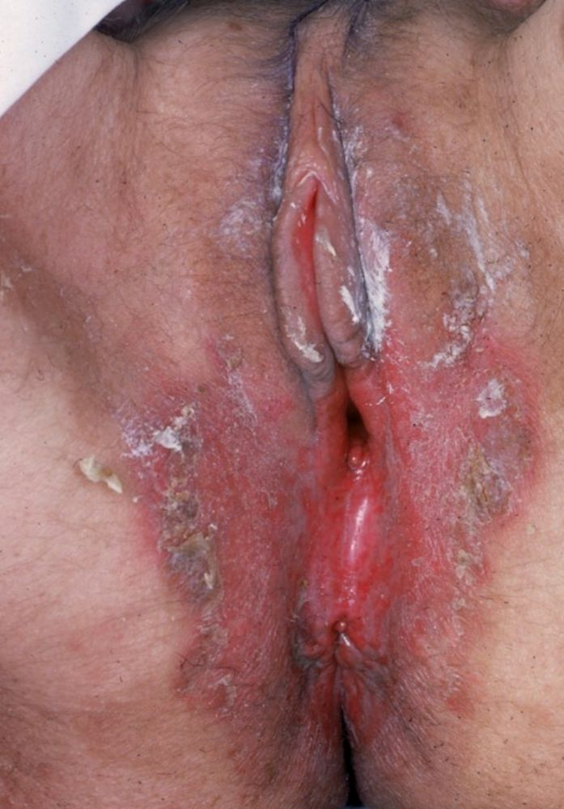

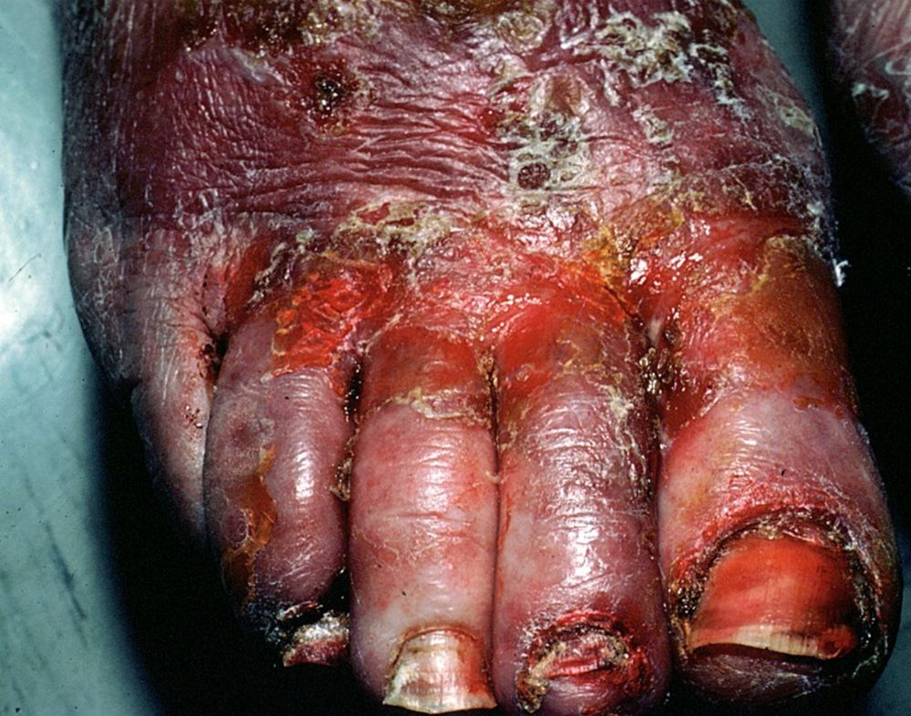

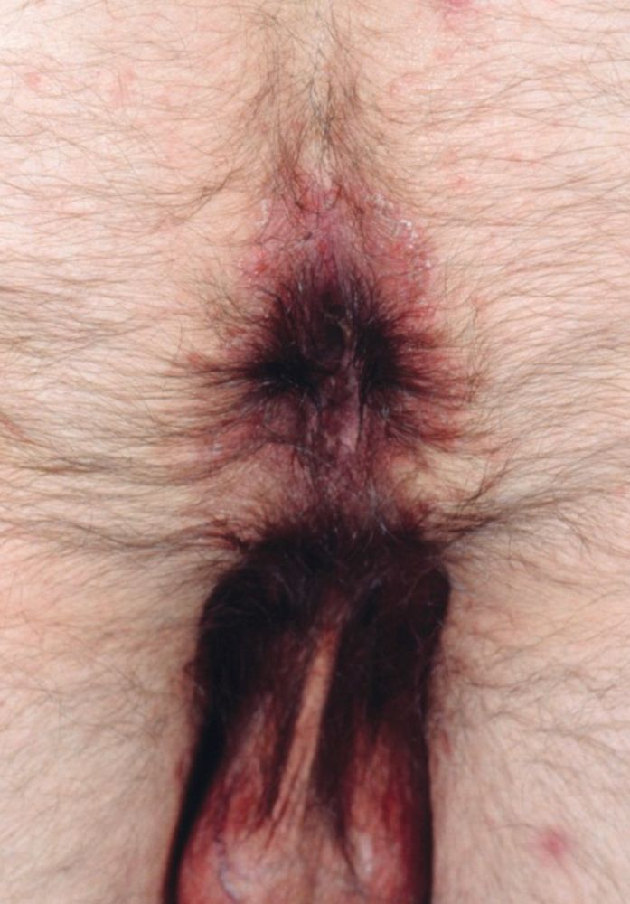

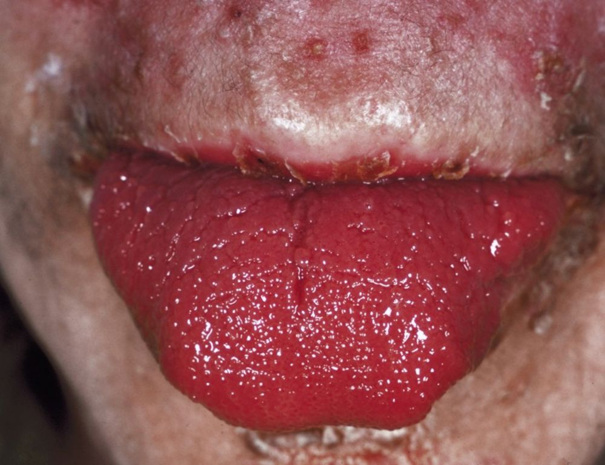

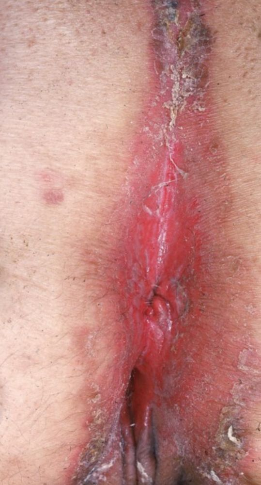

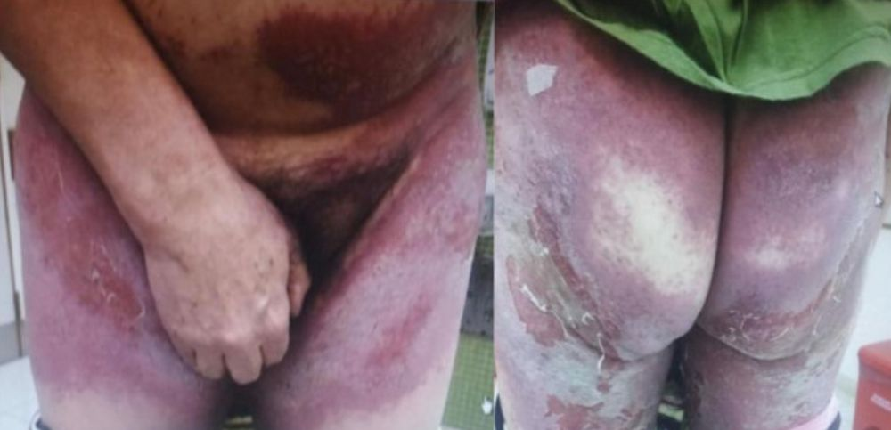
Na Skin Prime
Como podemos ajudar
Entre os recursos citados para Eritema Migratório Necrolítico, estes estão disponíveis na clínica:
Tratamentos
Diagnóstico